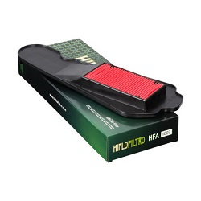
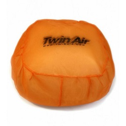
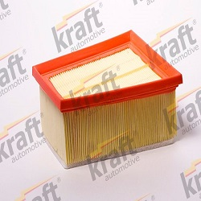
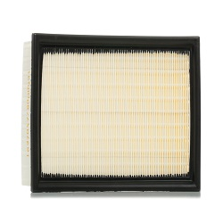
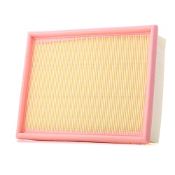

Home
Szűrők
2kategoria
3kategoria
4kategoria
elérhetőségek
A cégről
25 000 Ft
K&N SPORT BETÉTSZŰRŐ
1 223 FtFt
HIFLOFILTRO OIL FILTER

5 000Ft
HIFLOFILTRO AIR FILTER
3 606 Ft
HIFLOFILTRO OIL FILTER CARTRIDGE BLACK

6 700 Ft
TWIN AIR GP over-filter cap

2 540 Ft
Légszűrő RIDEX

ár:2 960 Ft
Légszűrő RIDEX

ár:3 507 Ft
Légszűrő MASTER-SPORT
 az eredeti légszűrőházba.")